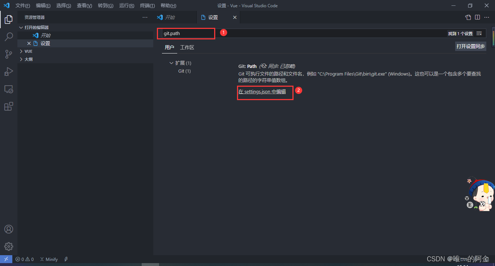

基本准备
Vscode环境准备
Pycharm 专业版收费，社区版又不能开发Web，因此，选用免费、开源、轻量、便捷的Vscode。
在安装Vscode、Python等软件后，首先打开Vscode的“终端--新建终端”。
-
终端操作
终端常用命令 mkdir 文件夹名称 #创建文件夹 cd 文件夹名称 #转到创建的文件夹 此外： cd .. #跳转到上一级文件夹 clear #清除屏幕 -
生成虚拟环境
使用虚拟环境安装依赖 python -m venv env #生成虚拟环境 env\scripts\activate #激活虚拟环境 -
安装包
pip install XXXpip list #查看安装列表
设置Vscode git
-
下载并安装git
git官网 -
配置git

在输入框中输入 git.path ，打开 settings.json 文件 
在 settings.json 文件中，添加 git 的安装路径

然后关闭 VScode ，再次打开，过几秒钟后，点击左侧的第3个图标，也就是下图的第一个地方，发现第2和第3个地方变成了可点击状态，不是暗色的，表明git环境配置成功。

使用Mkdocs生成学习笔记
-
安装Mkdocs
pip install mkdocs mkdocs new my-project mkdocs build #创建文档 # MkDocs 包含了一个内建的服务器，可以在本地预览当前文档。在项目文件夹下打开命令提示符，执行mkdocs serve命令就可以启动内建服务器 mkdocs serve #启动服务器 执行成功后，在浏览器打开 http://127.0.0.1:8000/，就可以看到页面的样子啦！ #使用“Ctrl+C”可以关闭服务器 -
使用git将笔记推送到github 使用ctrl+shift+P并输入git,选择“初始化存储库”
``````
-
在Gitpage部署
mkdocs gh-deploy